Lifestyle product scenes
Family travel scenes for a baby travel cot, where the product in every image is the studio packshot and only the scene, the people and the light are generated. The product here is an unbranded stand-in made for this demo. Kardokh Kakabra, November 2026.
Six scenes, one product


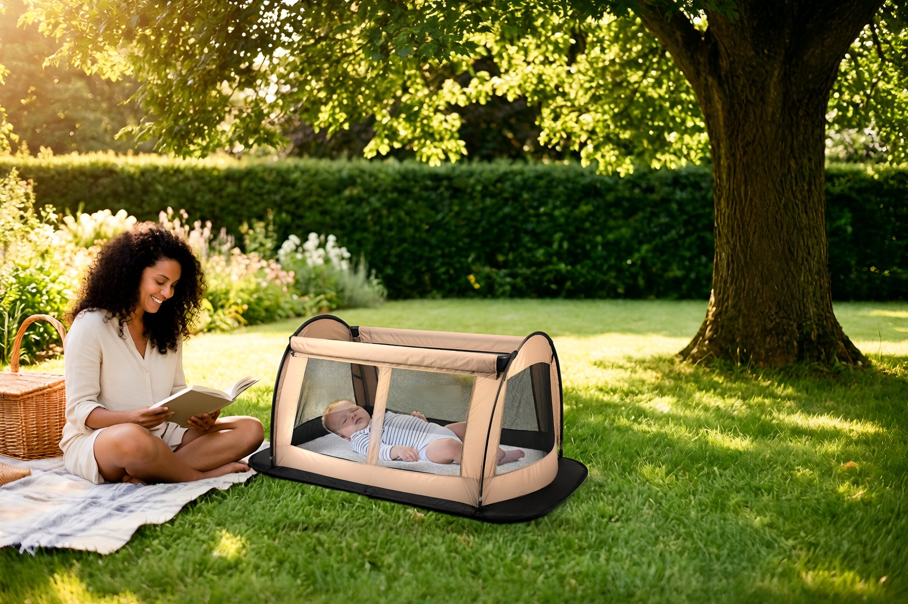

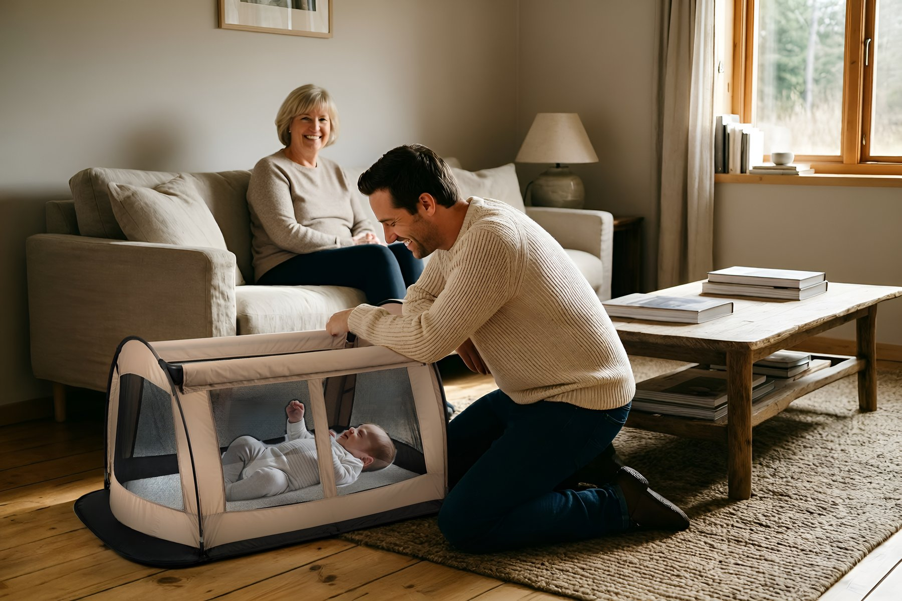

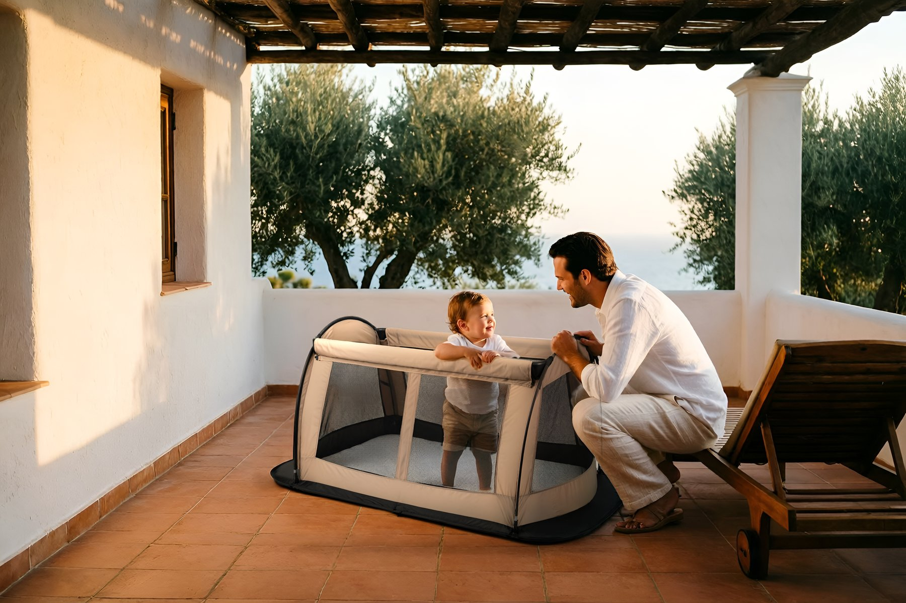

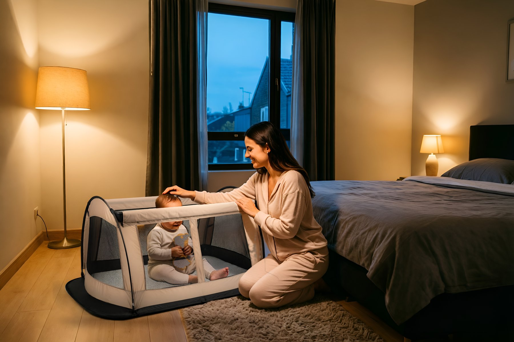

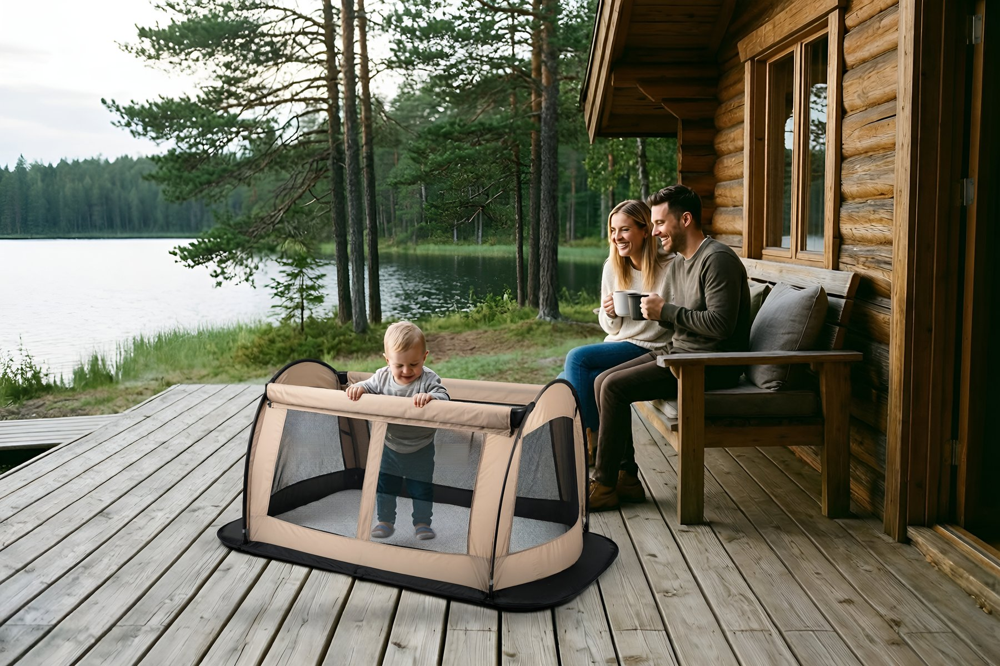
Drag to compare: generator alone and with the product lock
Left: the image model added the family and redrew the cot (panels, mesh and arches drift). Right: every cot pixel that no person covers is restored from the packshot, lit by the scene.
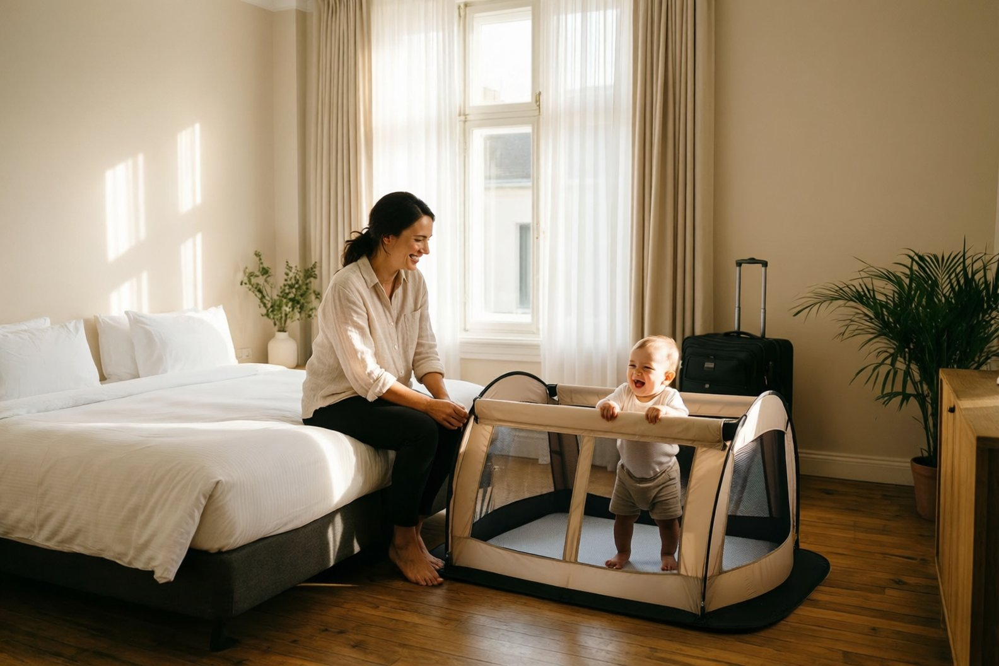
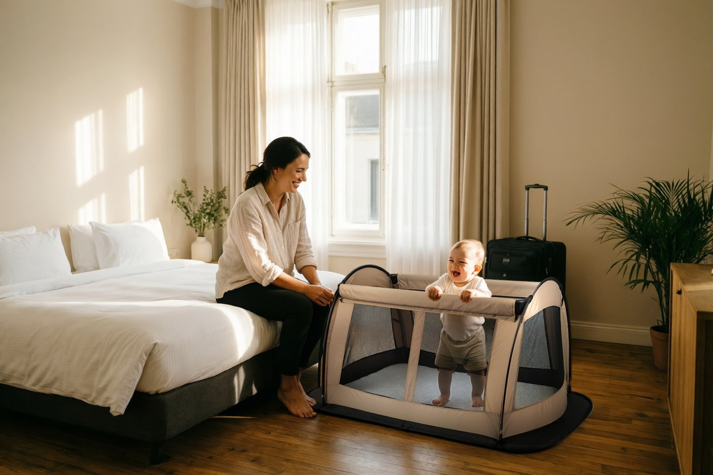
Generator aloneProduct lockAccuracy across a set
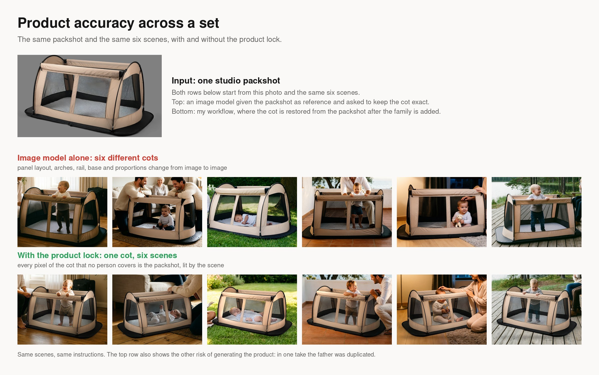
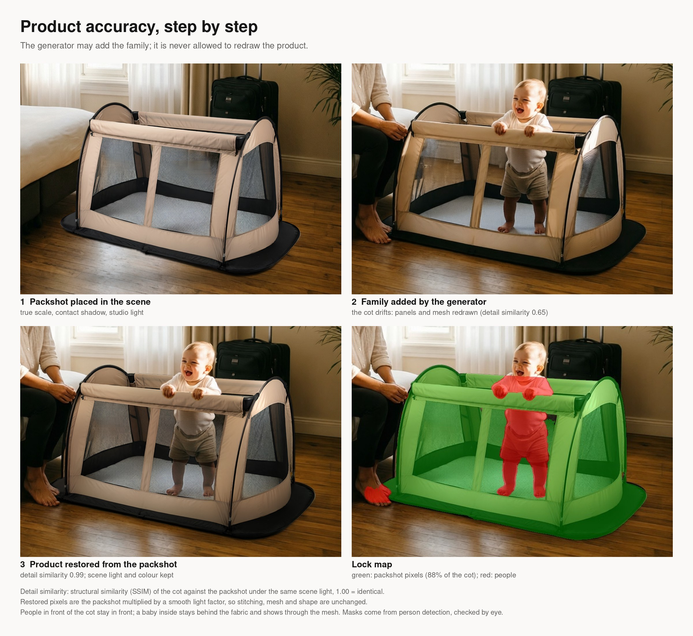
Formats and print
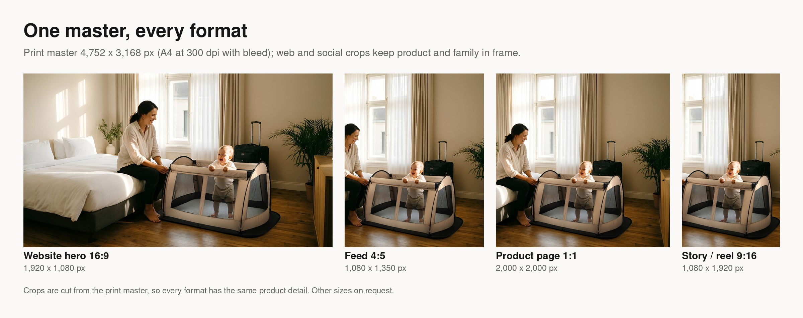
Full-size print masters (4,752 x 3,168 px, 300 dpi): hotel, garden, cabin. Print-ready A4 with 3 mm bleed: PDF.


How each image is made
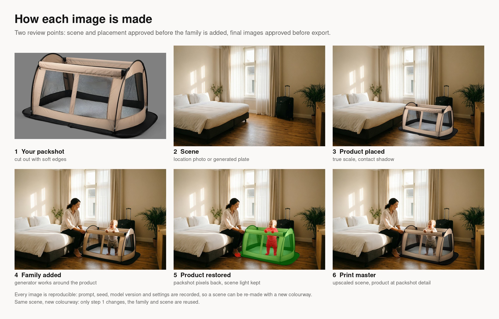
- Packshot cut out with soft edges; placed at the scale set by the camera height, with a contact shadow.
- Family added by an open-weight image-editing model (Qwen-Image-Edit), scenes by Qwen-Image; both Apache 2.0.
- Product restored from the packshot: feature matching and alignment find where the model put the cot; people are found by detection and segmentation (OWLv2, SAM 2.1); a baby inside the cot stays behind the fabric and shows through the mesh.
- Scene light carried onto the product as a smooth brightness and colour factor; print masters upscaled (Real-ESRGAN) with the product placed again from the full-resolution packshot.
Earlier work
Product visual pipeline (product identity, colour and prompt-match scoring) and a generated training film with a recurring character.